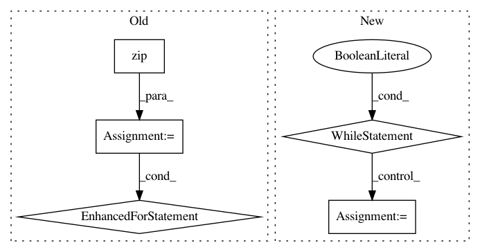

06c50f050dc143126636b6c9b7d80ee3468377a6,examples/serving/ende_client.py,,main,#,82
Before Change
batch_input = ["Hello world!", "My name is John.", "I live on the West coast."]
batch_output = translate(stub, args.model_name, batch_input, tokenizer, timeout=args.timeout)
for input_text, output_text in zip(batch_input, batch_output):
print("{} ||| {}".format(input_text, output_text))
if __name__ == "__main__":
main()
After Change
stub = prediction_service_pb2_grpc.PredictionServiceStub(channel)
tokenizer = pyonmttok.Tokenizer("none", sp_model_path=args.sentencepiece_model)
while True:
text = input("Source: ")
output = translate(stub, args.model_name, [text], tokenizer, timeout=args.timeout)
print("Target: %s" % output[0])
print("")
if __name__ == "__main__":
main()
In pattern: SUPERPATTERN
Frequency: 3
Non-data size: 5
Instances
Project Name: OpenNMT/OpenNMT-tf
Commit Name: 06c50f050dc143126636b6c9b7d80ee3468377a6
Time: 2019-04-06
Author: guillaume.klein@systrangroup.com
File Name: examples/serving/ende_client.py
Class Name:
Method Name: main
Project Name: tensorflow/minigo
Commit Name: 159275e9df878fe7882006898d91026e6842499b
Time: 2018-01-21
Author: brian.kihoon.lee@gmail.com
File Name: selfplay_mcts.py
Class Name:
Method Name: play
Project Name: mathics/Mathics
Commit Name: a5ca410dfe2f15272f0f963e1ebc4d3f5228f088
Time: 2016-08-13
Author: 16sn6uv@gmail.com
File Name: mathics/builtin/numeric.py
Class Name: Rationalize
Method Name: approx_interval_continued_fraction